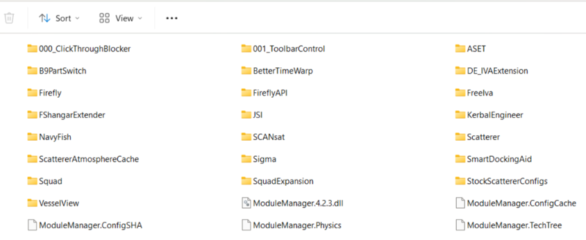

What are Mods:

Source: Image Taken by Creator of Website, modifications created respectively by other people.
Mods are made by the community and can be potentially dangerous! Use common sense, and only download mods from platforms that are either official, or widely recognised as safe. Kerbal Space Program nor the creator of this website are responsible for any damage caused by game modifications.
Where to Download Mods:
| Location: | Description: |
|---|---|
| KSP Forums | A section of the official KSP community forums where users can post and download mods. |
| C.K.A.N. |